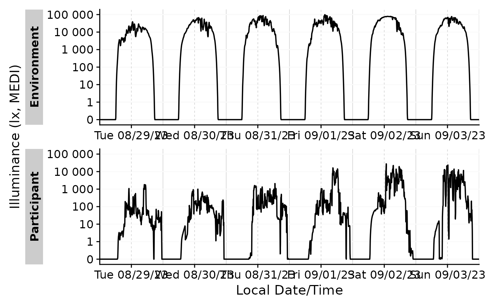
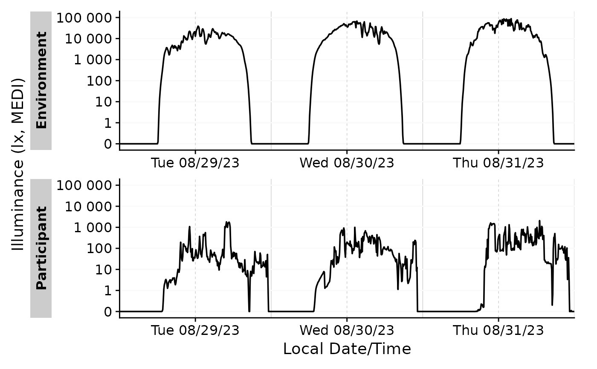

gg_days() will create a simple ggplot along the timeline. The result can
further be manipulated like any ggplot. This will be sensible to refine
styling or guides. Through the x.axis.limits arguments, the plot can be
much refined to align several groups of differing datetime ranges. It uses
the Datetime_limits() function to calculate the limits of the x-axis.
Another notable functions that are used are Datetime_breaks() to calculate
the breaks of the x-axis.
Usage
gg_days(
dataset,
x.axis = Datetime,
y.axis = MEDI,
aes_col = NULL,
aes_fill = NULL,
group = NULL,
geom = "line",
scales = c("free_x", "free_y", "fixed", "free"),
x.axis.breaks = Datetime_breaks,
y.axis.breaks = c(-10^(5:0), 0, 10^(0:5)),
y.scale = "symlog",
y.scale.sc = FALSE,
x.axis.label = "Datetime",
y.axis.label = "Illuminance (lx, MEDI)",
x.axis.limits = Datetime_limits,
x.axis.format = "%a %D",
title = NULL,
subtitle = NULL,
interactive = FALSE,
facetting = TRUE,
jco_color = FALSE,
...
)Arguments
- dataset
A light logger dataset. Expects a
dataframe. If not imported by LightLogR, take care to choose a sensible variable for thex.axis..- x.axis, y.axis
column name that contains the datetime (x, defaults to
"Datetime"which is automatically correct for data imported with LightLogR) and the dependent variable (y, defaults to"MEDI", or melanopic EDI, which is a standard measure of stimulus strength for the nonvisual effects of light). Expects asymbol. Needs to be part of thedataset.- aes_col, aes_fill
optional input that defines separate sets and colors or fills them. Expects anything that works with the layer data
ggplot2::aes().- group
Optional column name that defines separate sets. Useful for certain geoms like
boxplot.Expects anything that works with the layer dataggplot2::aes()- geom
What geom should be used for visualization? Expects a
character"point"forggplot2::geom_point()"line"forggplot2::geom_line()"ribbon"forggplot2::geom_ribbon()as the value is just input into the
geom_function from ggplot2, other variants work as well, but are not extensively tested.
- scales
For
ggplot2::facet_wrap(), should scales be"fixed","free"or"free"in one dimension ("free_x"is the default). Expects acharacter.- x.axis.breaks
The (major) breaks of the x-axis. Defaults to
Datetime_breaks(). The function has several options for adjustment. The default setting place a major break every 12 hours, starting at 12:00 of the first day.- y.axis.breaks
Where should breaks occur on the y.axis? Expects a
numeric vectorwith all the breaks or a function that calculates them based on the limits. If you want to activate the default behaviour of ggplot2, you need to put inggplot2::waiver().- y.scale
How should the y-axis be scaled?
Defaults to
"symlog", which is a logarithmic scale that can also handle negative values."log10"would be a straight logarithmic scale, but cannot handle negative values."identity"does nothing (continuous scaling).a transforming function, such as
symlog_trans()orscales::identity_trans(), which allow for more control.
- y.scale.sc
logicalfor whether scientific notation shall be used. Defaults toFALSE.- x.axis.label, y.axis.label
labels for the x- and y-axis. Expects a
character.- x.axis.limits
The limits of the x-axis. Defaults to
Datetime_limits(). Can and should be adjusted to shift the x-axis to align different groups of data.- x.axis.format
The format of the x-axis labels. Defaults to
"%a %D", which is the weekday and date. Seebase::strptime()for more options.- title
Plot title. Expects a
character.- subtitle
Plot subtitle. Expects a
character.- interactive
Should the plot be interactive? Expects a
logical. Defaults toFALSE.- facetting
Should an automated facet by grouping be applied? Default is
TRUE.- jco_color
Should the
ggsci::scale_color_jco()color palette be used? Defaults toTRUE.- ...
Other options that get passed to the main geom function. Can be used to adjust to adjust size, linewidth, or linetype.
Details
The default scaling of the y-axis is a symlog scale, which is a logarithmic
scale that only starts scaling after a given threshold (default = 0). This
enables values of 0 in the plot, which are common in light logger data, and
even enables negative values, which might be sensible for non-light data. See
symlog_trans() for details on tweaking this scale. The scale can also be
changed to a normal or logarithmic scale - see the y.scale argument for more.
Examples
dataset <-
sample.data.environment %>%
aggregate_Datetime(unit = "5 mins")
dataset %>% gg_days()

#restrict the x-axis to 3 days
dataset %>%
gg_days(
x.axis.limits = \(x) Datetime_limits(x, length = lubridate::ddays(3))
)
#> Warning: Removed 864 rows containing missing values or values outside the scale range
#> (`geom_line()`).
